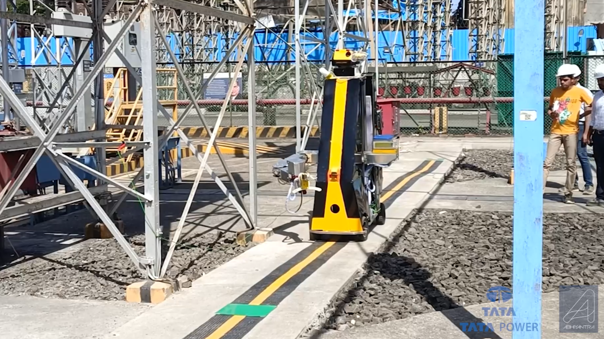
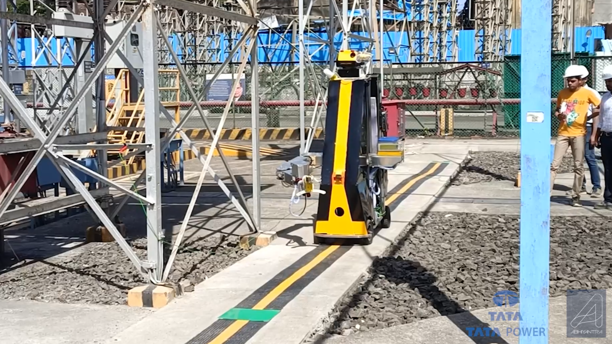

Project
TATA Power: 110 kV Insulator Cleaning Robot
An industrial field robotics system designed for safe, automated maintenance of high-voltage transmission infrastructure. The robot integrates a custom SCARA manipulator, modular embedded electronics, and vision-based inspection to perform cleaning and diagnostics in 110 kV environments.
Field Deployment / Prototype Demo
Highlights
- Manipulator Design: Developed a 4-DoF SCARA robotic arm capable of operating safely in 110 kV environments, with inverse kinematics and motion planning for automated cleaning trajectories.
- Embedded Systems: Architected modular embedded hardware with custom PCBs and distributed firmware coordinated by a Raspberry Pi master controller.
- Thermal Inspection: Integrated IR thermography to detect hotspot anomalies on transmission infrastructure prior to cleaning.
- Vision-Based Navigation: Implemented an OpenCV-based vision pipeline for line-following and alignment along insulator strings.
- Field Impact: Reduced routine inspection time by 3× and improved maintenance efficiency by 40% during field trials.
System Overview
The system combines mechanical manipulation, embedded control, and perception-driven decision making. A central controller coordinates distributed firmware modules, while vision and thermal sensing guide inspection, localization, and cleaning actions in high-risk environments.
Connections

Working
 


Technical Breakdown
Manipulator Kinematics & Motion Planning
The SCARA arm was modeled with forward and inverse kinematics to enable precise end-effector positioning around insulator surfaces. Motion planning routines generated smooth, repeatable cleaning trajectories while respecting joint limits and electrical clearance constraints.
Embedded Architecture
The robot uses a modular hardware architecture with custom PCBs and distributed microcontroller firmware. A Raspberry Pi master orchestrates sensing, actuation, diagnostics, and logging, improving maintainability and fault isolation during field deployment.
Perception & Inspection
An IR thermal camera identifies localized heating anomalies indicative of faults, while a camera-based OpenCV pipeline performs line following and alignment along the insulator chain. This combination enables targeted cleaning and inspection without human exposure to high voltage.
Key Takeaways
- Demonstrates real-world field robotics in hazardous environments
- Combines manipulation, embedded systems, and perception in a single platform
- Shows measurable operational impact through efficiency and time reductions
- Bridges academic robotics with industrial deployment constraints